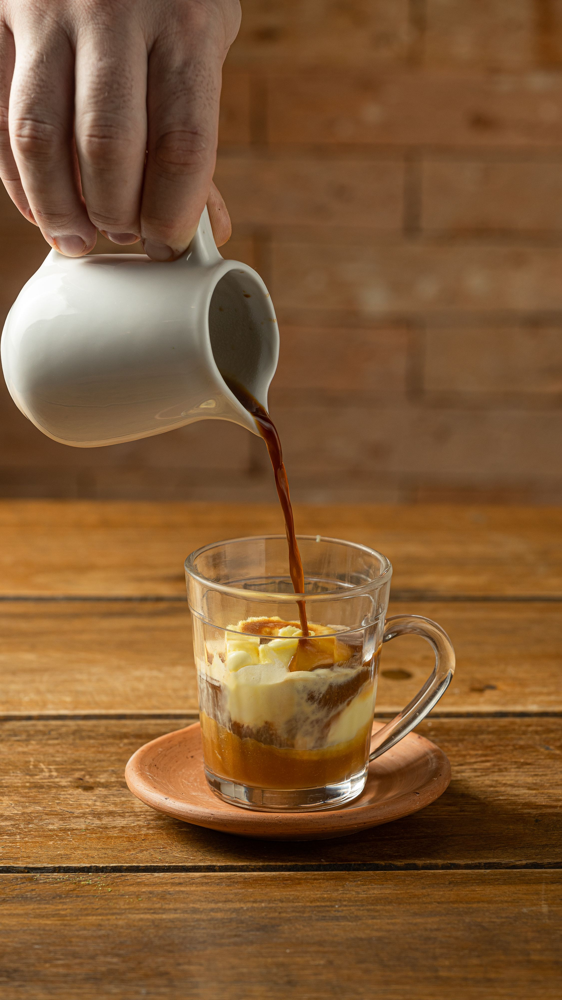

Espresso Altiplano
Extracción precisa con notas a panela y chocolate negro. Perfecto para comenzar la jornada con energía.
Café de especialidad, pan recién horneado y un lugar tranquilo y bonito para quedarte un rato. Tres sedes para que siempre tengas una cerca.
En Café Altiplano trabajamos directamente con caficultores colombianos para ofrecer granos de altura con un tostado artesanal impecable. Nos apasiona brindar un servicio cercano en espacios diseñados para inspirar, conversar y descansar.

Extracción precisa con notas a panela y chocolate negro. Perfecto para comenzar la jornada con energía.

Equilibrio ideal entre espresso intenso y leche suave texturizada con una capa cremosa inconfundible.

Horneado diariamente en nuestra cocina con cacao puro y nueces tostadas. El acompañamiento ideal para tu café.